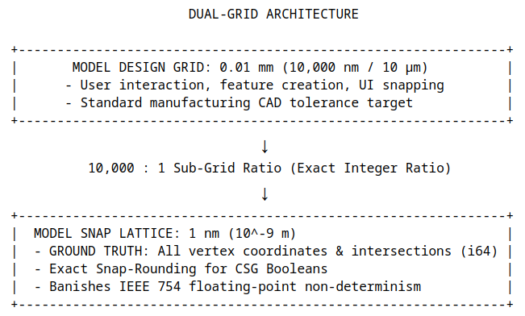
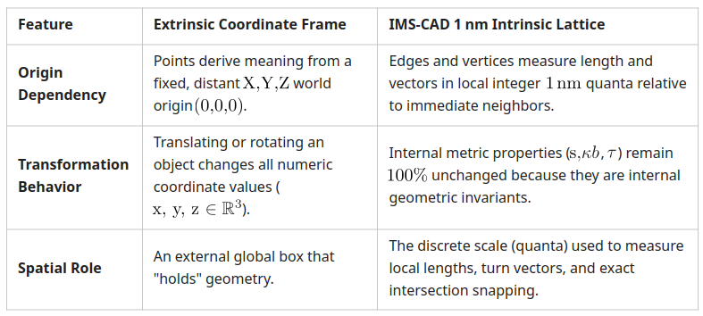

2026-10-21
Avoid Problems -
Infinity is not needed in CAD
The paradigm shift of IMS-CAD is from NURBS infinite geometry to intrinsic discrete geometry. IMS-CAD has the concept of dual precision grids: 1. the Ground-Truth Grid, and 2. the Model Grid. The dual-grid concept separates the ground-truth calculation lattice from the CAD operator interaction scale. The ground-truth lattice is a discrete 1 nanometer resolution snap grid and is the basis for the model universe and the means to eliminate round-off error accumulation. The model design grid has typically 1/100 of a millimeter resolution which has enough precision for most manufacturing. The snap precision underneath 1/100 mm is a factor of 10,000.
This dual-grid model is a core pillar in IMS-CAD for eliminating numerical round-off drift and non-determinism.
64-bit Integer Space
64-bit signed integers (i64) range: approximately $\pm 9.22 \times 10^{18}$.
At $1\text{ nm}$ resolution, i64 provides a span of $\pm 9.22 \times 10^9\text{ meters}$ (over $9$ million kilometers or $18$ million kilometers end-to-end), giving virtually unlimited spatial headroom for any engineering assembly without coordinate integer overflow.
How the Dual-Grid Paradigm Works
The dual-grid concept separates the ground-truth calculation lattice from the CAD operator interaction scale:

1. The Model Snap Lattice (1 Nanometer Ground Truth)
Every vertex location, edge split, and CSG intersection point is stored as an exact integer coordinate ($\mathbb{Z}^3$) on this 1 nm lattice. Because spatial predicates rely on exact integer sign determinants rather than floating-point $\epsilon$-thresholds, two geometric elements either share the exact same 64-bit integer coordinate or remain distinct. This completely eliminates the floating-point rounding accumulation, micro-gaps, edge slivers, and non-manifold "leaky" geometry that destabilize legacy NURBS kernels.
2. The Model Design Grid (0.01 mm / 10,000 nm Operator Space)
This represents the human/engineering interaction scale. CAD operators work in $0.01\text{ mm}$ ($10\text{ }\mu\text{m}$) increments, which matches high-precision CNC toolhead and additive manufacturing steps. Because, the ratio between the design grid and the underlying calculation lattice is an exact integer ratio (10,000 : 1). This sub-grid safety factor gives the engine several orders of magnitude of exact sub-resolution arithmetic space to execute exact snap-rounding, edge splitting, and agentic seam relaxation without rounding errors bleeding back into the user's intended manufacturing features.
Why This Eliminates Round-Off Error
In traditional NURBS-CAD, evaluating intersections requires floating-point root-finding over $\mathbb{R}^3$. Because IEEE 754 floating-point addition and multiplication are non-associative, repeating operations or evaluating them in different order yields slightly different spatial coordinates.
In IMS-CAD:
1. All geometry is grounded on discrete integer positions ($\mathbb{Z}^3$).
2. Intersection points are evaluated using exact rational arithmetic and snapped deterministically to the 1 nm integer lattice.
3. Seam strain is relaxed via discrete agent difference equations.
The 1 nm Grid is Not an Extrinsic 3D Coordinant Frame
IMS-CAD is an intrinsic geometry system; a self-referencing geometry system.
The 1 nm lattice is an intrinsic discrete metric space (a set of discrete spatial quantizations), not an extrinsic coordinate frame. Understanding why this distinction holds is critical for building Rust IMS-CAD engine correctly.
Extrinsic Frame vs. Intrinsic Metric Space
To see why the lattice is intrinsic rather than extrinsic, consider what defines an extrinsic coordinate frame versus an intrinsic set of discrete units:

How the 1 nm Latice Functions Intrinsically
In IMS-CAD, the $1\text{ nm}$ grid serves as the quantization scale for discrete metric space ($\mathbb{Z}^3$), rather than a global Cartesian reference frame:
1. Local Grid Quantization: When an active edge agent measures its arc length $s$, it expresses that length as an integer count of nanometer quanta (such as, $s = 10,450,000\text{ nm}$). It does not care where those nanometers sit relative to a global world origin.
2. Isolated Cell Sub-Universes: Each SubMeshCell contains its own local calculation space ($\mathbb{Z}^3$). Two independent components (like a bracket and a bolt) each have their own internal $1\text{ nm}$ integer metric. They do not share a common $X,Y,Z$ space until docked via Boundary Ports using relative Lie group transformations ($\mathrm{SE}(3)$).
3. Invariance Under Motion: When an assembly or sub-mesh cell moves, its internal integer edge lengths, turn vectors, and local integer coordinates do not undergo floating-point matrix transformations. The internal geometry remains completely untouched.
The Benefit
Space in the physical universe has discrete operational scales, but physical objects don't lose their shape or internal strain merely because they move through space. Similarly, in IMS-CAD, the lattice is simply the discrete fundamental unit of length that enables exact integer determinants, exact snap-rounding, and 100% deterministic arithmetic without floating-point drift.
The $1\text{ nm}$ lattice is the set of discrete integers ($\mathbb{Z}^3$) that quantizes local metric space, keeping geometry exact and intrinsic without relying on a global extrinsic coordinate system.